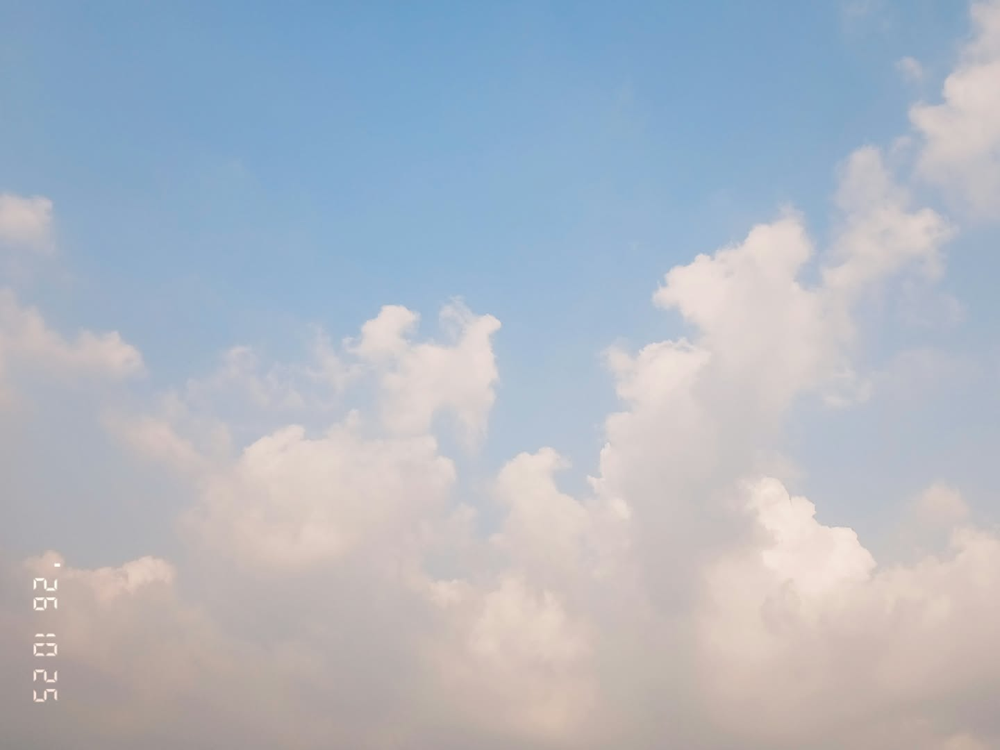

Salutation! I'm Iyah, from Grade 9 Gallantry. I'm a little shy around people I don't know well, but I become more talkative once I'm comfortable with someone.
One of my is drawing! I enjoy experimenting with different art styles, different brushes, and drawing characters. I also like photography, making outfits in my head, reading webtoons, and watching shows but I most enjoy animated shows.
✦ A Few of My Favorites ✦
Favorite Color: Purple 💜
Favorite Foods: Spaghetti, sinigang, menudo, spicy or not spicy noodles, ice cream, etc.
Favorite Webtoons: School Bus Graveyard, The Blind Prince, Vampire Family, Third Shift society, The Knight only lives today, Radient Rewind, The Prize of Youth, After School Lessons For Unripe Apples (this is actually my theme for this website) and The Greatest Estate Developer
Favorite Shows: Detective Conan, Demon Slayer A Silent Voice, Ninjago, Death Note Metal Family, Murder Drones, MHA, The Owl House, SpyxFamily, Tadc, etc.
Favorite Hobby: Drawing (but it sometimes annoys me😔), photography, and reading webtoons